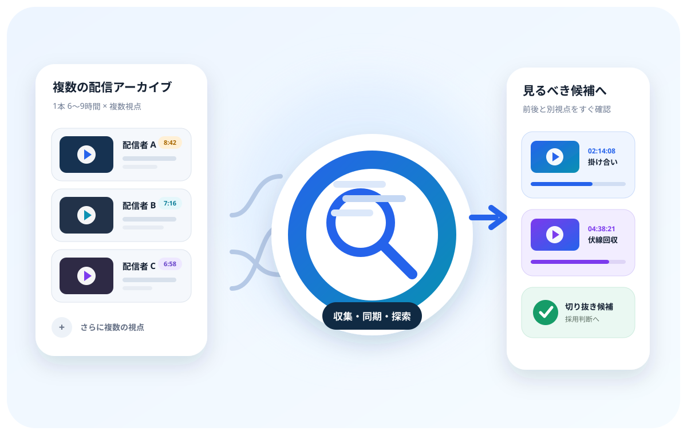
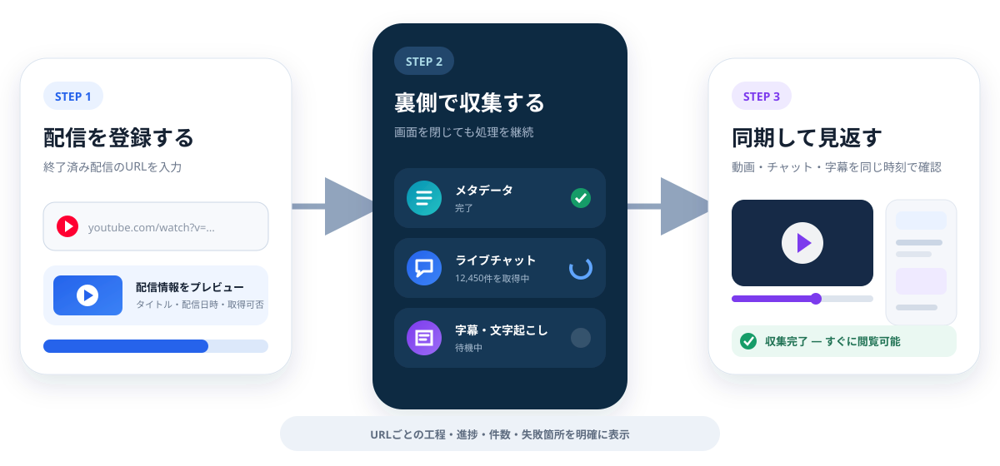
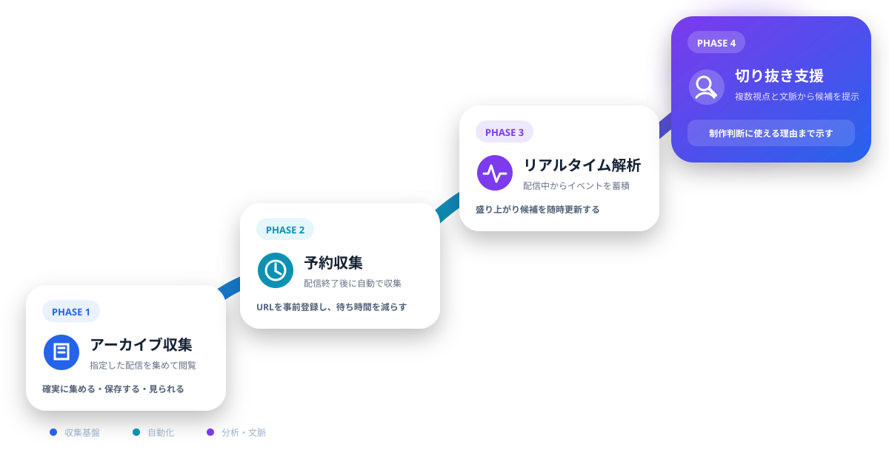
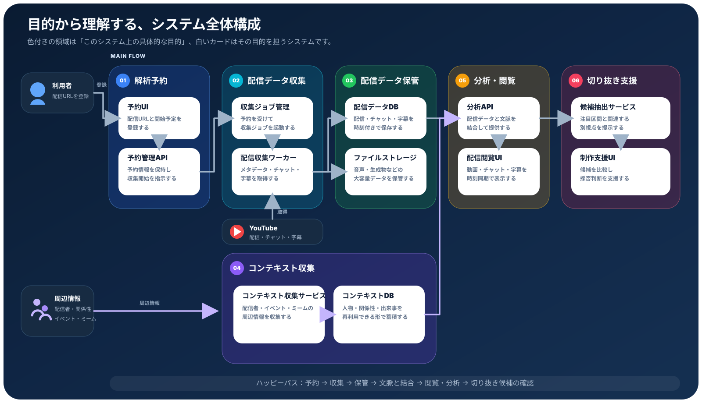

1配信が長い
1本6〜9時間。候補を探すためだけに、膨大な視聴時間が必要になります。
YouTube CLIP PRODUCTION SUPPORT
複数の配信アーカイブ、ライブチャット、字幕、時系列データを集め、切り抜き制作に必要な場面探索を支援するプロジェクトです。

01
THE PROBLEM
1本6〜9時間。候補を探すためだけに、膨大な視聴時間が必要になります。
同じ出来事でも配信者ごとに映像と会話が異なり、複数配信を往復して確認します。
関係性、過去の出来事、ミーム、前後の掛け合いを知らなければ価値を判断できません。
だから、単純な「コメント数のピーク検出」だけでは足りない。
候補を絞り、前後を見て、別視点と文脈を辿れることが必要です。02
FIRST PRODUCT
AIによる高度な分析より先に、終了済み配信を指定して必要なデータをバックグラウンド収集し、動画と同期して閲覧できる状態を完成させます。

03
USER EXPERIENCE
「待って、それ前の企画でも同じこと言ってたよね」
04
ROADMAP

最終的に目指すもの
ベテラン切り抜き師が行う「候補を探す → 前後を確認する → 別視点を辿る → 文脈から採用を判断する」という思考プロセスの支援SYSTEM OVERVIEW
YouTube配信を入口に、収集・保存・時刻同期を共通基盤として整え、その上に複数視点の比較や配信者・イベントの文脈を重ね、切り抜き制作の探索と判断へつなげます。

FOR DEVELOPERS
フェーズごとの対象範囲、収集データ、画面、ジョブ状態、データモデルはプロダクト方針に整理しています。